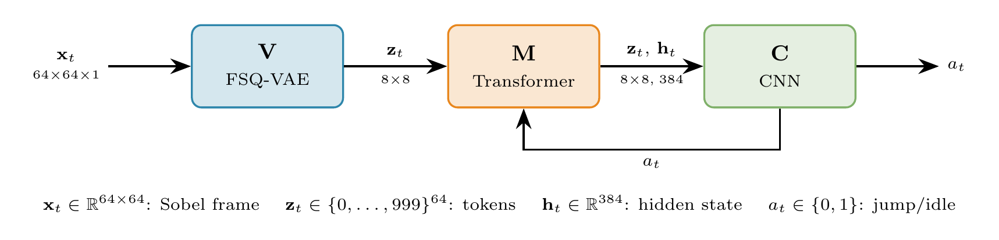
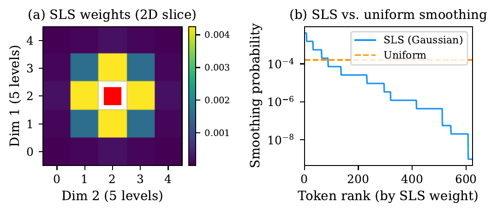

Discrete World Models tokenize observations with a learned quantizer and predict next-frame tokens with a transformer, but standard cross-entropy treats every incorrect prediction as equally wrong. Finite Scalar Quantization (FSQ) makes a richer signal available by construction: each code sits on an integer coordinate lattice, so a token one step away in one dimension is a near-miss while a token at the opposite corner is a gross error.
We introduce Structured Label Smoothing (SLS), which replaces the one-hot training target with a kernel over codebook coordinates, so a near-miss prediction is treated as a near-miss rather than a gross error. We study SLS under joint training of the FSQ encoder and the dynamics transformer in a single discrete latent space, with a straight-through path carrying prediction gradients back into the encoder and a light pixel-reconstruction loss retained only as an anti-collapse regularizer.
An isotropic kernel with bandwidth fixed by a first-neighbour rule gives a zero-calibration hyperparameter that is robust to codebook drift. We evaluate on Geometry Dash, where the controller is trained entirely in imagination and deployed at 30 FPS on the real game via screen capture.
TL;DR. A training objective that exploits the FSQ codebook lattice so near-miss predictions are treated as near-misses rather than gross errors, studied under joint encoder + transformer training and deployed at 30 FPS on Geometry Dash.

One-hot cross-entropy ignores codebook geometry entirely. SLS replaces the one-hot training target with a kernel over FSQ lattice coordinates, so tokens one quantization step away from the target receive most of the supervision mass and distant tokens receive negligible weight. Concretely, given the target token $i$ and an alternative $j$ with FSQ coordinates $\mathbf{c}(i), \mathbf{c}(j)$ on the integer lattice:
$$q_{\text{SLS}}(j \mid i) \;\propto\; k\!\left(\lVert \mathbf{c}(j) - \mathbf{c}(i) \rVert\right), \qquad k(d) = e^{-d^{2}/2\sigma^{2}}.$$
The bandwidth $\sigma$ is fixed by a first-neighbour rule (immediate lattice neighbour at the kernel's half-maximum), giving a zero-calibration hyperparameter that is robust to codebook drift under joint training. Classical uniform label smoothing is the structureless limit of this construction.

torch.compile in reduce-overhead mode.@misc{tariolle2026sls,
author = {Tariolle, Florent},
title = {Structured Label Smoothing over Finite Scalar Quantization
for Joint-Embedding Discrete World Models},
year = {2026},
howpublished = {\url{https://tariolle.github.io/sls-wm/}},
note = {Preprint}
}